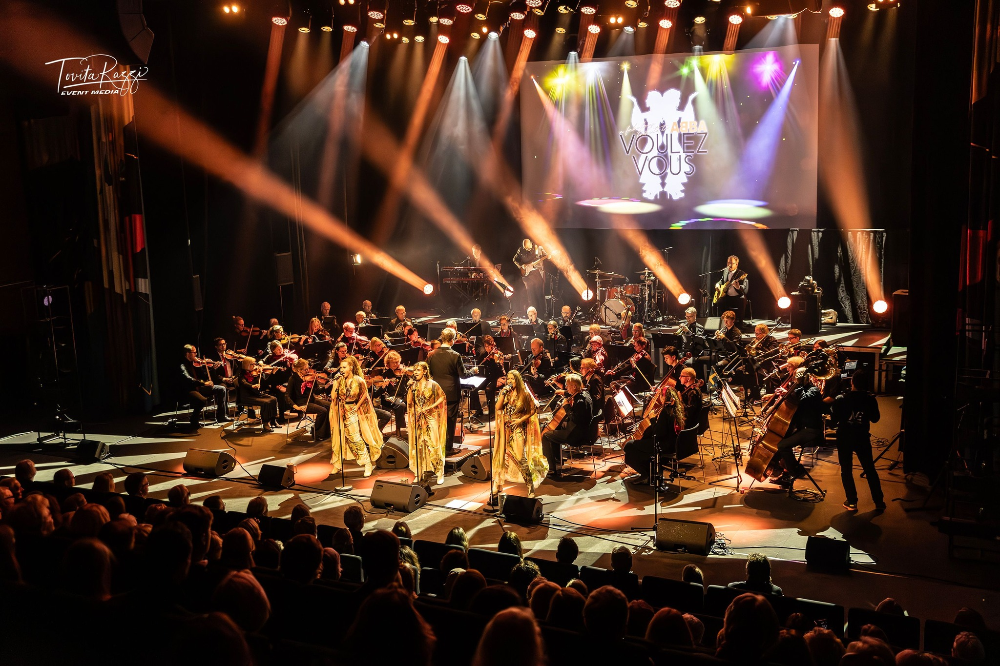
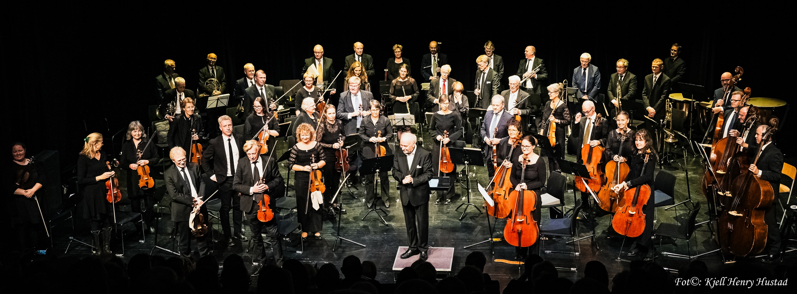

La orquesta
Orquesta local en Asker
- Desde 1972
- Ca. 35 músicos
- Ensayos los martes
- Repertorio clásico y nuevos proyectos
Asker · música local
Asker Symfoniorkester es una orquesta para jóvenes y adultos aficionados: música, comunidad y desarrollo musical entre generaciones.





La orquesta
Historia
Nacimos en 1972 y seguimos enriqueciendo la vida musical local. El objetivo es simple: dar a jóvenes y adultos una vida con música, colaboración y alegría de tocar juntos.
También tenemos un salongorkester que recupera el ambiente elegante de los cafés noruegos, con piezas conocidas y pequeñas sorpresas.
Concert
Un concierto de verano, sencillo y cercano, con jóvenes solistas de Asker kulturskole.
7. juni 2026
kl. 19.00
Østenstad kirke
Dirigent: Carl Nilsen
Videos
Un vistazo liviano a la orquesta en acción, sin agregar otro botón al menú.
Presentación 1
Presentación 2
Presentación 3
Presentación 4
Unirse
¿Tocas cuerda, viento, metal o percusión? Escríbenos y cuéntanos tu experiencia.
Ensayamos cada martes en Borgen ungdomsskole, de 19.00 a 21.45. Puedes pasar por un ensayo si tienes preguntas.
Enviar e-mailContacto